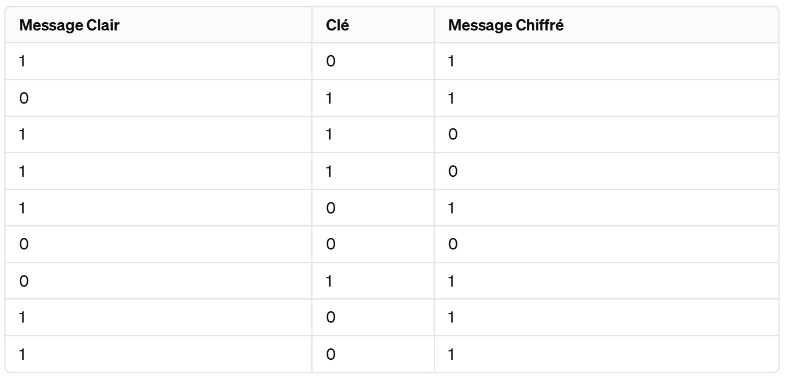

Jeu web d'introduction à la cryptographie
J'ai perdu
Le chiffre de Vernam : un chiffre parfaitement sûr !
Un chiffre parfaitement sûr est un chiffre tel que, même si un adversaire intercepte le message, même avec une puissance de calcul infinie à sa disposition, il ne peut pas obtenir la moindre information concernant le message clair à partir du message chiffré.
Point historique
Créé en 1926 par Gilbert Vernam, ingénieur au laboratoire de recherche de la compagnie "American Telephone & Telegraph".
Ce chiffre n'est que très peu utilisé à cause de la difficulté de sa mise en oeuvre :
- les clés doivent être extrêmement longues !
- on doit éditer des livres entiers de clés à usage unique et les distribuer secrètement (un exemplaire entre les mains de l'ennemi et tout est compromis)
- l'émetteur et le récepteur doivent être synchrones : si un message de l'émetteur se perd, ils vont se décaler dans les clés utilisées, et c’est raté…
Principe
Le chiffre de Vernam (aussi connu sous le nom de masque jetable, pour mettre en avant l'importance de l'utilisation d'une clé unique à chaque fois) est mis en œuvre de la manière suivante.
Tout d'abord, le message est converti en séquences de bits, c'est-à-dire de 0 et de 1, de manière informatique.
Ensuite, une clé, générée de façon totalement aléatoire, est créée, composée également d'une suite de 0 et de 1, de même longueur que le message à chiffrer.
Chaque bit du message clair est ensuite combiné, via l'opération XOR, avec le bit correspondant dans la clé.
Par exemple, si le message clair est 101110011 et que la clé est 011101000, alors le message chiffré serait 110011011.

À réception du message, le destinataire effectue la même opération sur le message chiffré : il prend ainsi chaque bit du message chiffré et effectue l'opération XOR avec le bit correspondant de la clé. Cela lui permet de retrouver le message initial, par la propriété du XOR (0 xor b xor b = 0 et 1 xor b xor b = 1).
Anecdote
Résultat : Il fut ainsi utilisé pour sécuriser le téléphone rouge, ligne directe entre la Maison Blanche et le Kremlin du temps de la guerre froide. Les clés circulaient dans les valises diplomatiques, transportées dans des avions bourrés d'agents secrets.